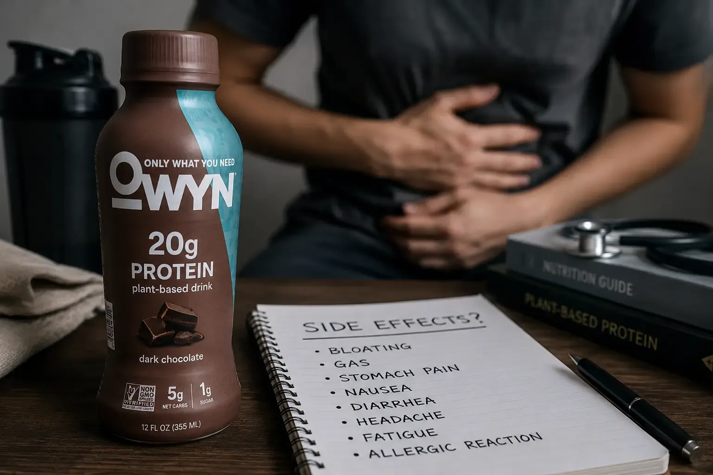
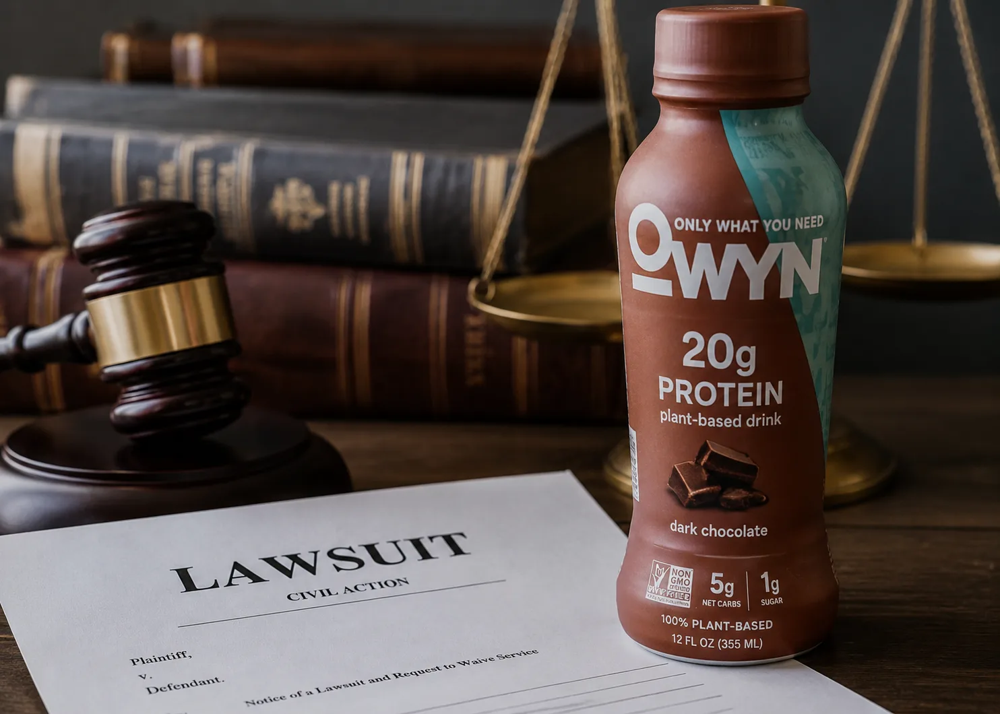

★★★★★
“I was nervous about side effects, but this OWYN protein drink sat well for me and still gave solid plant protein.”
Sofia Nguyen
Sensitive stomach
Trust & Safety
Honest guidance on reviews, whether OWYN is healthy for you, side effects questions, and related safety topics.


An owyn protein shake review usually focuses on taste, texture, digestion comfort, protein amount, and ingredient quality. Looking across owyn protein shake reviews, many shoppers praise the dairy-free convenience and plant-based formula, while others compare sweetness level and flavor strength. You can also browse customer reviews on the homepage and our OWYN FAQ.
If you are also researching powders, an owyn protein powder review often covers mixability, aftertaste, and how the powder performs in smoothies versus water or plant milk.
People ask is owyn protein shake good for you when they want a practical fit for vegan, vegetarian, or dairy-free routines. For many, the answer depends on overall diet quality, protein needs, and personal tolerance.
Related questions like are owyn protein shakes healthy and is owyn protein shake healthy come down to the same checklist: review protein per serving, sugar, calories, added vitamins, and whether the formula matches your goals.
Searches for owyn protein side effects are usually about digestion, sweetness sensitivity, or adjusting to higher fiber/protein intake. Most people tolerate plant protein shakes well, but any new supplement can cause temporary stomach discomfort for some users. Start with one serving and see how you feel.
This page is informational only and is not medical advice. Talk with a healthcare professional for personalized guidance.
Shoppers sometimes search owyn protein shake recall after seeing safety headlines in the broader protein category. Always verify recall status through official brand notices and trusted regulatory sources rather than unverified social posts.
Queries about owyn protein powder lead reflect growing concern around heavy metals in plant proteins industry-wide. If this matters to you, ask retailers for testing information and review current brand transparency updates before buying.
Customer Reviews
Different perspectives on taste, digestion comfort, and everyday use.
“I was nervous about side effects, but this OWYN protein drink sat well for me and still gave solid plant protein.”
“My OWYN protein shake review is simple: great taste, no dairy crash, and it fits my healthy routine.”
“After reading reviews and trying it myself, I feel it is a smart dairy-free option when I need quick nutrition.”